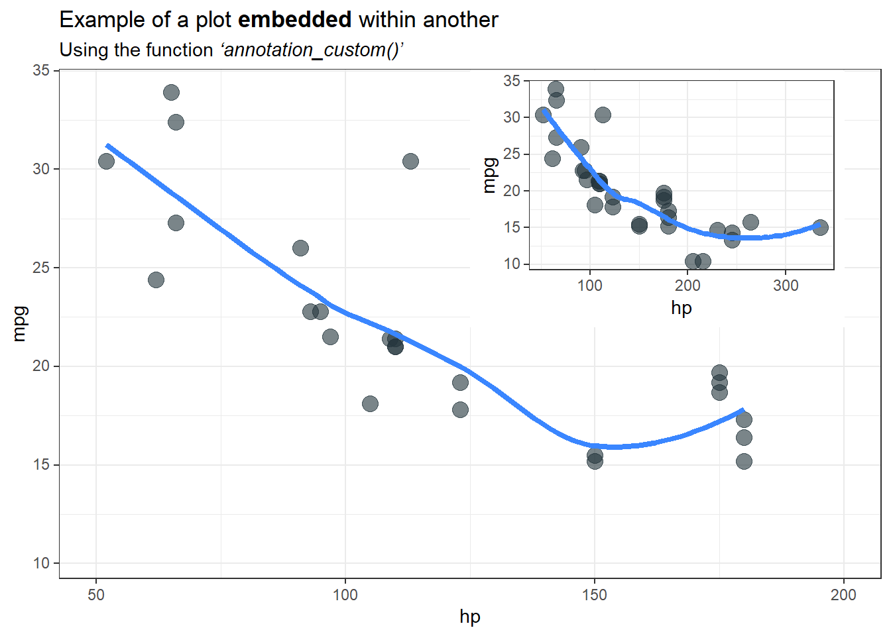
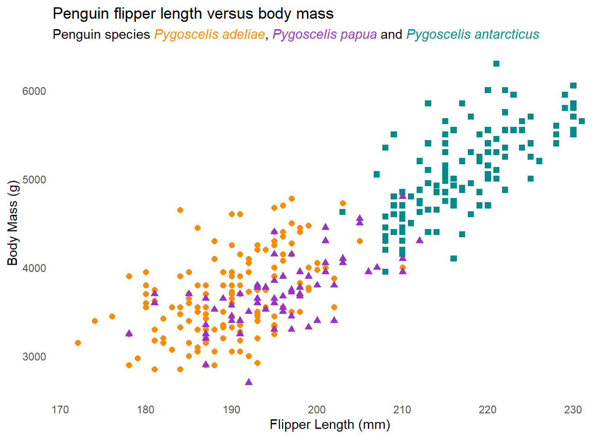
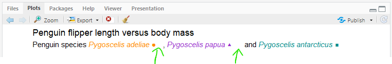
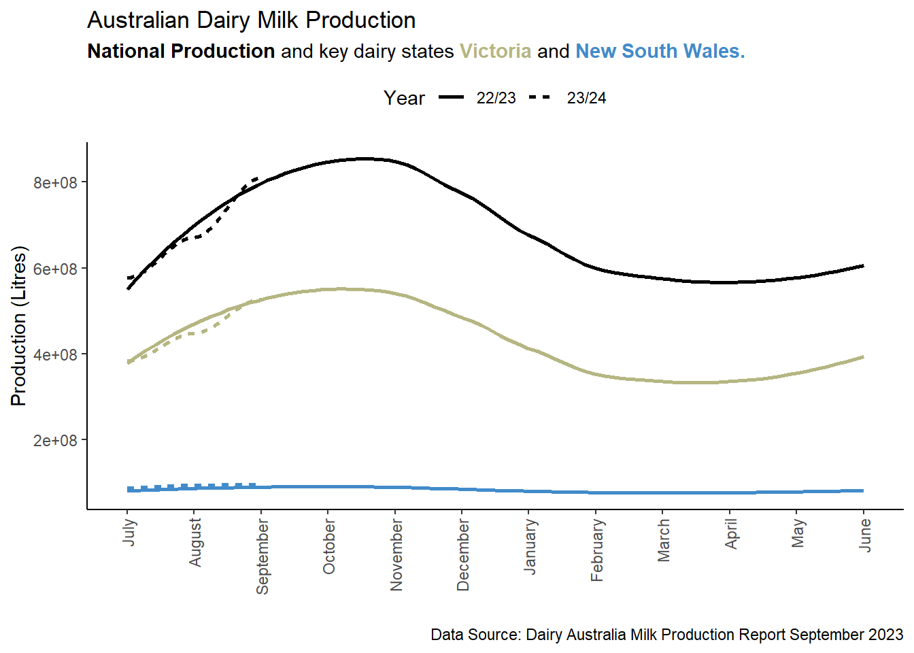
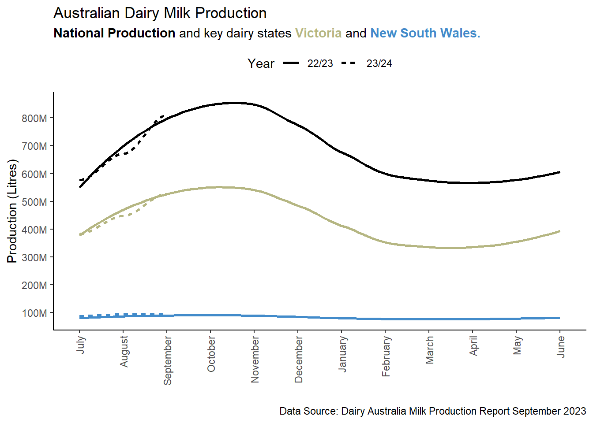

library(tidyverse)
library(mdthemes)
data(mtcars)
base_plot <- ggplot(mtcars, aes(hp, mpg)) +
geom_point(size = 4, alpha = 0.6, colour = "#22333b") +
geom_smooth(size = 1.5, se = F, colour = "#3a86ff") +
labs(title = "Example of a plot **embedded** within another",
subtitle = "Using the function *'annotation_custom()'*") +
md_theme_bw() +
xlim(50, 200)R
R
A worthy collection of short R commands and tricks
Using {custom_annotation} to embed one plots inside another.
Embedded plots can be a powerful tool for showcasing data across an extended axis while still emphasizing specific sections.
Creating these are very easy. Here is a quick guide and example:
Step 1: Create your base plot.
Begin by establishing your base plot, which will serve as the canvas for your embedded plot. Typically, the base plot is the primary focus of your visualization.
Step 2: Create your plot that you want to embed within the canvas.
Your embedded plot doesn’t have to be the same type as your base plot. Feel free to customize it according to your data visualization needs.
embedded_plot <- ggplot(mtcars, aes(hp, mpg)) +
geom_point(size = 4, alpha = 0.6, colour = "#22333b") +
geom_smooth(size = 1.5, se = F, colour = "#3a86ff") +
md_theme_bw()Step 3: Use custom_annotate() to embed the plot.
Now, it’s time to embed the plot within the canvas using the annotation_custom() function. You’ll need to specify the X and Y positions for the embedded plot:
base_plot + annotation_custom(ggplotGrob(embedded_plot),
xmin = 125,
xmax = 200,
ymin = 22,
ymax = 35)
Adding linking colours to plot titles instead of a legend
Enhancing your plot titles with linking colours 🌈 is a clever strategy to maximise your plot realestate by eliminating legends, all while looking fantastic!

To achieve this style you will need:
the {ggtext} package which will perform the HTML rendering, in this case in the subtitle to define the text colour.
Adding
plot.subtitle = element_markdown()to the theme, {ggtext} will perform markdown rendering, for example making specific text bold, or in the above example, italicised.and finally, adding
legend.position = "none"also to the theme will remove the old clunky default legend
Here is the full code 👇 enjoy!
library(ggplot2) # For plotting
library(palmerpenguins) # For the example penguin dataset
library(ggtext) # For HTML rendering of text to support colour
# Also for Markdown rendering of text
ggplot(data = penguins,
aes(x = flipper_length_mm,
y = body_mass_g)) +
geom_point(aes(color = species,
shape = species),
size = 2) +
scale_color_manual(values = c("#FF8C00","#9932CC","#008B8B")) +
labs(title = "Penguin flipper length versus body mass",
subtitle = "Penguin species
<span style='color:#FF8C00;'>*Pygoscelis adeliae*</span>,
<span style='color:#9932CC;'>*Pygoscelis papua*</span> and
<span style='color:#008B8B;'>*Pygoscelis antarcticus*</span>",
x = "Flipper Length (mm)",
y = "Body Mass (g)") +
theme_minimal() +
theme(panel.grid = element_blank(),
plot.subtitle = element_markdown(),
legend.position = "none")If you want to go a step further you can add the corresponding point shape/symbol to the subtitle as well🎉
All you need to do is add the HTML Unicode (e.g. ● for ●) for the matching symbol/shape to the subtitle. You can look up the HTML Unicode here.
Note
For some reason when viewing the plot in the Rstudio plot tab, additional spaces (relative to the length of the Unicode) will appear next to the symbols. However, this disappears when you render the image in a quarto document or save the plot as an image.

Here is the full code 👇 enjoy!
library(ggplot2) # For plotting
library(palmerpenguins) # For the example penguin dataset
library(ggtext) # For HTML rendering of text to support colour
# Also for Markdown rendering of text
# Get HTML code for genometric symbols from:
# https://www.htmlsymbols.xyz/geometric-symbols
ggplot(data = penguins,
aes(x = flipper_length_mm,
y = body_mass_g)) +
geom_point(aes(color = species,
shape = species),
size = 2) +
scale_color_manual(values = c("#FF8C00","#9932CC","#008B8B")) +
labs(title = "Penguin flipper length versus body mass",
subtitle = "Penguin species
<span style='color:#FF8C00;'>*Pygoscelis adeliae* ●</span>,
<span style='color:#9932CC;'>*Pygoscelis papua* ⯅</span> and
<span style='color:#008B8B;'>*Pygoscelis antarcticus* ⯀</span>",
x = "Flipper Length (mm)",
y = "Body Mass (g)") +
theme_minimal() +
theme(panel.grid = element_blank(),
plot.subtitle = element_markdown(),
legend.position = "none")Transform axis numbers into more readable formats
Want to avoid number labels on your plots that are difficult to read or interpret such as the all too common scientific e notation as seen in this example? 👇

The label_number_si() function from the {scales} package will conveniently convert your unclear labels to a more appropriate format. Lets apply it to our example from above. 🥳🎉

Here is the full code 👇 enjoy!
library(ggplot2) # For plotting
library(ggtext) # For HTML rendering of text to support colour
# Also for Markdown rendering of text
library(scales)
data2 <- tibble::tribble(
~Month, ~Year, ~Region, ~Production_Litres,
"July", "22/23", "NSW", 80742825.35,
"August", "22/23", "NSW", 85515267.53,
"September", "22/23", "NSW", 89642883.77,
"October", "22/23", "NSW", 92774430.63,
"November", "22/23", "NSW", 86431638.4,
"December", "22/23", "NSW", 86230113.71,
"January", "22/23", "NSW", 81030159.32,
"February", "22/23", "NSW", 72891273.03,
"March", "22/23", "NSW", 78366274.94,
"April", "22/23", "NSW", 75805741.9,
"May", "22/23", "NSW", 79986532.53,
"June", "22/23", "NSW", 80446060.32,
"July", "22/23", "VIC", 386373862.86,
"August", "22/23", "VIC", 450615318.9,
"September", "22/23", "VIC", 527734837.67,
"October", "22/23", "VIC", 575715726.1,
"November", "22/23", "VIC", 519338047.94,
"December", "22/23", "VIC", 499009041.08,
"January", "22/23", "VIC", 423251928.39,
"February", "22/23", "VIC", 323689836.55,
"March", "22/23", "VIC", 333750042.9,
"April", "22/23", "VIC", 340058086.75,
"May", "22/23", "VIC", 388157951.5,
"June", "22/23", "VIC", 373346197.82,
"July", "22/23", "Australia", 570199372.1,
"August", "22/23", "Australia", 659242110.71,
"September", "22/23", "Australia", 797167795.77,
"October", "22/23", "Australia", 888535142.24,
"November", "22/23", "Australia", 818914946.8,
"December", "22/23", "Australia", 790237598.05,
"January", "22/23", "Australia", 693408820.19,
"February", "22/23", "Australia", 553467890.76,
"March", "22/23", "Australia", 580325765.96,
"April", "22/23", "Australia", 577153026.75,
"May", "22/23", "Australia", 623257518.13,
"June", "22/23", "Australia", 576627597.06,
"July", "23/24", "NSW", 87662230.03,
"August", "23/24", "NSW", 93724243.26,
"September", "23/24", "NSW", 96012475.27,
"July", "23/24", "VIC", 382943134.47,
"August", "23/24", "VIC", 447394128.72,
"September", "23/24", "VIC", 526453329.78,
"July", "23/24", "Australia", 576952581.71,
"August", "23/24", "Australia", 670893737.51,
"September", "23/24", "Australia", 809301895.87
)
data <- data |> mutate(Month = factor(Month, levels = c("July", "August", "September", "October", "November", "December", "January", "February", "March", "April", "May", "June")))
ggplot(data = data, aes(x = Month, y = Production_Litres, colour = Region, linetype = Year, group = interaction(Region, Year))) +
geom_smooth(se=FALSE) +
scale_color_manual(values = c("#000000","#428bca","#b5b682")) +
scale_y_continuous(labels = scales::label_number_si()) +
labs(title = "Australian Dairy Milk Production",
subtitle = "<span style='color:#000000;'>**National Production**</span> and key dairy states
<span style='color:#b5b682;'>**Victoria**</span> and
<span style='color:#428bca;'>**New South Wales.**</span>",
x = "",
y = "Production (Litres)",
caption = "Data Source: Dairy Australia Milk Production Report September 2023") +
theme_classic() +
theme(panel.grid = element_blank(),
plot.subtitle = element_markdown(),
legend.position = "top") +
theme(axis.text.x = element_text(angle = 90, vjust = 0.5, hjust=1)) +
guides(colour = "none", linetype = guide_legend(override.aes = list(color = "#000000")))Elegantly Join 3+ tibbles using a common key
Joining two tibbles is simple and concise using the join commands from dplyr. However, when you have three or more tibbles to join, you will often find yourself either writing a long pipe or taking a stepwise approach of joining the first two into a new object and using that to join with the third tibble, and so on.
Nevertheless, you can avoid all this by combining the reduce function from the 🐈⬛ purrr package with the relevant join command. Below is a simple example. 👇
library(dplyr)
library(purrr)
dt1 <- tibble(character = c("Harry", "Hermione", "Draco"),
house = c("Gryffindor", "Gryffindor", "Slytherin"))
dt2 <- tibble(character = c("Harry", "Hermione", "Draco"),
wand = c("Holly-phonenix-feather", "Vine-dragon-heartstring", "Hawthorn-unicorn-hair"))
dt3 <- tibble(character = c("Harry", "Hermione", "Draco"),
gender = c("Male", "Female", "Male"))
reduce(list(dt1, dt2, dt3), left_join, by = 'character')# A tibble: 3 x 4
character house wand gender
<chr> <chr> <chr> <chr>
1 Harry Gryffindor Holly-phonenix-feather Male
2 Hermione Gryffindor Vine-dragon-heartstring Female
3 Draco Slytherin Hawthorn-unicorn-hair Male Add a prefix to column names when pivoting from long data to wide data
At times, you may find it necessary to apply a prefix to the column names created when transitioning from long-format data to wide-format data. The good news is that the pivot_wider() function streamlines this process by offering the names_prefix argument. This feature proves particularly valuable when working with multiple tibbles that share similar naming conventions and structures. After all, nobody enjoys dealing with default conflict resultion of identical column names like colname1.x, colname1.y, colname2.x, colname2.y, and so on.
library(tidyr)
library(tibble)
weather <- tribble(
~Date, ~Measurement, ~Value,
20100101L, "T.Max_oC", 31.2,
20100102L, "T.Max_oC", 31.7,
20100103L, "T.Max_oC", 32.5,
20100104L, "T.Max_oC", 28.9,
20100101L, "T.Min_oC", 21.3,
20100102L, "T.Min_oC", 21.5,
20100103L, "T.Min_oC", 22.2,
20100104L, "T.Min_oC", 22.1,
20100101L, "Rain_mm", 0.6,
20100102L, "Rain_mm", 0.4,
20100103L, "Rain_mm", 0.8,
20100104L, "Rain_mm", 6.8,
20100101L, "Evap_mm", 4.1,
20100102L, "Evap_mm", 4.6,
20100103L, "Evap_mm", 5.9,
20100104L, "Evap_mm", 4.4
)
weather# A tibble: 16 x 3
Date Measurement Value
<int> <chr> <dbl>
1 20100101 T.Max_oC 31.2
2 20100102 T.Max_oC 31.7
3 20100103 T.Max_oC 32.5
4 20100104 T.Max_oC 28.9
5 20100101 T.Min_oC 21.3
6 20100102 T.Min_oC 21.5
7 20100103 T.Min_oC 22.2
8 20100104 T.Min_oC 22.1
9 20100101 Rain_mm 0.6
10 20100102 Rain_mm 0.4
11 20100103 Rain_mm 0.8
12 20100104 Rain_mm 6.8
13 20100101 Evap_mm 4.1
14 20100102 Evap_mm 4.6
15 20100103 Evap_mm 5.9
16 20100104 Evap_mm 4.4weather |>
pivot_wider(names_from = Measurement,
names_prefix = "UQGatton_",
values_from = Value)# A tibble: 4 x 5
Date UQGatton_T.Max_oC UQGatton_T.Min_oC UQGatton_Rain_mm UQGatton_Evap_mm
<int> <dbl> <dbl> <dbl> <dbl>
1 20100101 31.2 21.3 0.6 4.1
2 20100102 31.7 21.5 0.4 4.6
3 20100103 32.5 22.2 0.8 5.9
4 20100104 28.9 22.1 6.8 4.4